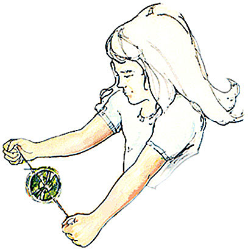
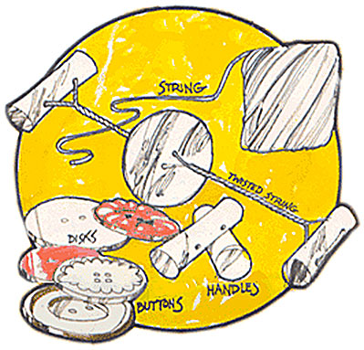
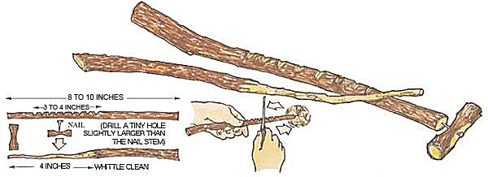
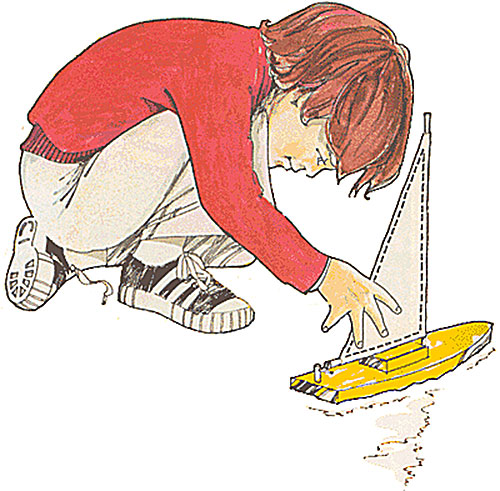
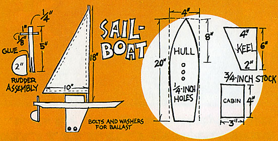
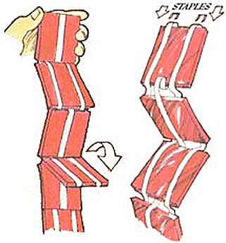
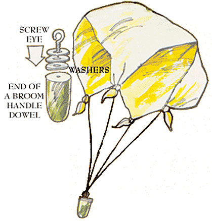
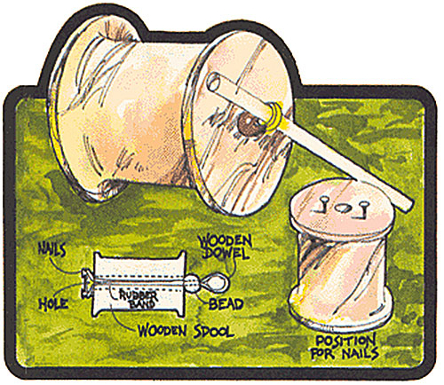
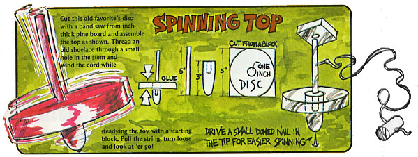

Anyone can make and enjoy this simple, inexpensive, down-home toy. The only things needed are string and large buttons. But, a fancier version can be made by cutting 1/8- inch wood or hardboard discs in 3, 2-1/2 and 2-inch diameters. Drill the holes 1/2 to 1 inch apart and use two 3-inch pieces of wood dowel for the handles. Drill the holes for the string and thread the handles and disc. That's ` all . . . pull the handles and the "button" spins and hums.
For some easy ole-time music, find a straight piece of cornstalk and cut four slits from joint to joint. Then whittle a notched bridge, lift the "strings" with your knife point and slide the bit of wood into place. A smaller length of stalk does fine for a bow.
Cut this old favorite's disc with a band saw from inch-thick pine board and assemble the top as shown. Thread an old shoelace through a small hole in the stem and wind the cord while steadying the toy with a starting block. Pull the string, turn loose and look at 'er go!
Here's a mountain toy that any kid old enough to manage a jackknife can muster up in a few minutes. The only store-bought item necessary is a small 1/2-inch nail or sturdy pin . . . that's it! Cut a 1/4 to 3/8-inch caliper hard wood twig into the lengths shown. Install the free-turning blade, move the drive stick rapidly across the "washboard" notches and watch the little fella spin!
Build your very own sailboat using scrap lumber and other recycled materials.
For the hull you'll need a 20-inch piece of 2 X 4-inch pine board. Lay out the shape of the boat and carefully cut out the form on a band saw. Drill four 1/4-inch holes as shown for the mast, two joining dowel rods and the rudder shaft. Plane or sand down the bow sides equally and shape the underside of the stern with a band saw cut.
Make the cabin and keel out of 3/4-inch pine-board and join both units to the hull at the same time with two 2-1/2 X 1/4-inch dowels... matching those holes already drilled in the hull. Make sure the centerboard is both perpendicular to the hull and parallel with the ship's sides.
Next, position and glue the mast on the deck and slide the rudder shaft through the hole in the stern. Finish the rudder assembly.
Meanwhile, have Mom make the sail from a bright scrap of lightweight sewing fabric or an old sheet.
Connect the boom to the mast with two small screw eyes and a bit of string. Drill holes and fasten two bolts with several heavy washers to the base of the keel for ballast . . . hang the sailcloth and head for the water.
Take along several washers for extra ballast and use monofilament fishing line tied to the rudder shaft to return your craft to port.
Remember this one? Just grab the end section, move it back and forth and watch the other squares tumble down the line. To make your clatter blocks, you'll need a package of twill tape and seven 2-1/2 X 2-1/2 X 1/4-inch plywood squares. Sand the blocks smooth, weave the two outer apes loosely around the sections and staple the tapes to the top edges of the squares. Then weave the center tape through the other way and staple it to the bottom edge of each section. That's it!
This simple toy can be made entirely from recycled materials. For the chute itself use an old handkerchief, worn-out scarf, or goodly square of lightweight fabric scrap from Mom's sewing drawer-but be sure to ask her first!
Next, tie a one-foot piece of string (or longer for bigger chutes) to each of the fabric's four corners, assemble your weight as illustrated, knot those four strings to the screw eye and prepare for lift-off!
This old-timer is guaranteed to help keep the young 'uns occupied while you finish the chores.
The hardest item to find these days while gathering materials for your racer is a largewooden spool... plastic just doesn't make it! You'll also need a 1/4-inch dowel three inches long, a large bead (bigger than the spool's hole)... leaving enough of each nail exposed to hold the rubber band. Wrap the band around the nails, thread it through the spool and bead, and slip the dowel through the protruding loop. Now you're ready to race.
Wind the rubber-band motor, place the toy on a smooth surface and watch it go!
Cut this old favorite's disc with a band saw from an inch-thick pine board and assemble as shown in the Image Gallery.
|
 Have fun with this easy to make hummer button.
|
 String, buttons and wooden dowels are all it takes to make these buttons hum. |
 Use your jackknife to make this "whammydoodle" toy. |
|
 This sailboat will keep your child busy for hours. |
 A pine board, dowels, an old cotton sheet and some bolts and washers are all that is necessary to construct this sailboat. |
 Surprise your kids with this easy to make clatter blocks toy. |
|
 This parachute, like all the rest of these toys, is made from recycled materials. |
 Have fun with these wooden spool racers. |
 See how long you can keep this spinning top going. |